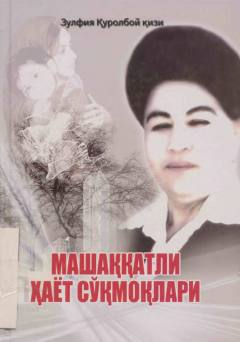

MHTadbirkor ayol Nazira Shodmonovaning mashaqqatli va ibratli hayot yo'li haqida roman.
Bu roman Qashqadaryolik taniqli tadbirkor Nazira Shodmonovaning mashaqqatli hayot yo'lini tasvirlaydi. Halol mehnati, qiyinchiliklarga bardoshi va ishbilarmonlik salohiyati tufayli katta muvaffaqiyatlarga erishgan bu ayolning ko'rgan-kechirganlari, quvonch va qayg'ulari bayon etiladi. Asar zamonamiz qahramonlaridan biri bo'lgan birinchi tadbirkor ayol haqida haяjon bilan yozilgan.